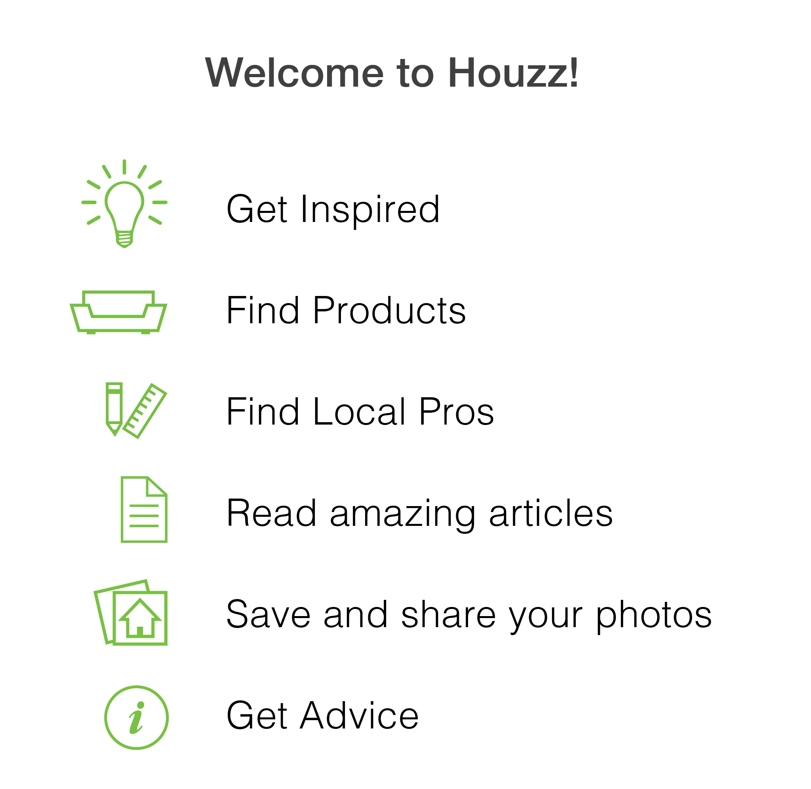

Houzz offers several features beyond getting inspired by beautiful photos of fresh interior design and well-written articles about home improvement. Many of our users were unaware they could save images in sharable Ideabooks, buy furniture and products for their homes, find vetted and reliable contractors and interior designers, and ask for advice on community forums.
My Role
I worked with two amazing colleagues on the concept and then developed the
visual design,
UI,
UX,
and motion design
myself.
Goals
To introduce first time users of the mobile apps to the main attributes of the Houzz platform
To make an engaging, informative, and brief introduction
To stay on-brand with elegant, minimalist design
To tell a story
Conceptual Research and Inspiration
I began by reviewing introduction experiences of top brands and collected the ones that resonated the most with me.
I presented the deck of collected app introductions and presented them to our another product designer who acted as a sounding board and advisor on this project and a brilliant copywriter who helped make the copy shorter and more impactful.
The Hue, Stitcher, and IFTTT apps had the best introductions at the time. We discussed what worked and what didn’t to narrow down ideas for Houzz.
Design Research and Inspiration
For the visual design I choose to model my work on the strong iconography used in the iOS and Android apps and on the Houzz website.
The design is minimalist, clean, elegant and uses the signature Houzz green. Some of the line weights varied due to intended usage so I kept a keen eye that my work would have a consistent line weight.
Initial Design Sketches
I felt a mid-century modern aesthetic would suit a minimalist design so I began to see how I could render some of this furniture in a style that would match the Houzz iconography. I used Illustrator heavily at this time.
Perspective drawing did not fit the aesthetic so I opted for front-facing furniture selected directly from the Houzz Marketplace. This chair is the Monroe Chair in Ocean Blue. See it on the Houzz Marketplace. I simplified the design and aligned it with the Houzz iconography.
I proceeded to do this to a many items from the Houzz Marketplace. I felt using actual products from the Marketplace promoted our inventory and reinforced the brand. This is the Engage Upholstered Fabric Sofa in Atomic Red. See it on the Houzz Marketplace.
Concept Iterations
In the initial designs I highlighted six topics to introduce to new users. I tested various colour schemes and layout options. Gradients can be appealing but also heavy handed and hard to compress.

Visual Design and Animation Iterations
I began to play with the idea that the features available on Houzz could help customers make their houses feel more like homes. This animation was made in Cinema 4D.
First Prototype Animation
I find that making complete animated UX and UI prototypes is a great way to think through interaction. The prototypes are also fantastic when communicating with developers and other stakeholders.
In this video, the introduction opens with six topics, the experience can be skipped at any time either by clicking the X on the top right or by selecting the Signup or Login buttons.
The second page discusses Ideabooks and the Houzz community. The third page show the Marketplace and a scrolling animation to reproduce how the Marketplace behaves on mobile devices. The forth page discusses finding professionals to help with home improvement and the fifth page reinforces the idea of creating of account.
Animation Explorations
Time was spent determining the best animations that might add to the storytelling.
Storyboard Iterations
The design is refined, reducing the number of topics, adding colour to the Signup and Login buttons, adding appropriate icons to the topics, and the copy is reduced to communicate ideas quickly.
The Houzz logo is moved to a more prominent position, which helps establish hierarchy.
These storyboards were made as artboards in Illustrator. Illustrator and Sketch are highly compatible in a UI workflow.
Implementation on Mobile Devices
As I was working on the prototype I began to think about how we could build one version to fit on iOS and Android mobile phones and iOS and Android tablets.
Although the background of the design was white, simply adding padding would not have been a solution since items from the pages flow from one to the next.
Asset creation
This is the spreadsheet I used to organise to keep track of exported assets and to have a shared document the team could refer to to find asset names. Each device needed a selection of resolutions - especially Android devices which require five different resolutions.
Spec creation
Specs are an annoying but necessary evil. However, making specs allows the designer to fine-tune sizing, placement, and spacing of assets so I’ve always done my own.
At the time of this design, the Houzz engineering team consisted of only three developers. The animation and number of assets required more time than was available. The project was tabled for a later date.
I love the idea of a launch experience for mobile apps but sometimes apps are downloaded in a time crunch in which case launch experiences create friction. One solution would be to make an informational experience accessible from Settings or have it be launchable from a button on the nav bar that exists for three months after installation or until watched.